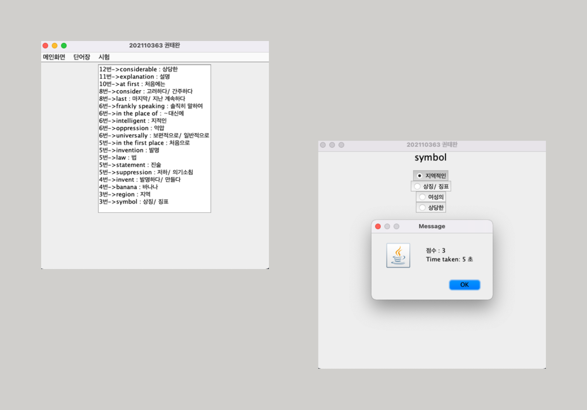
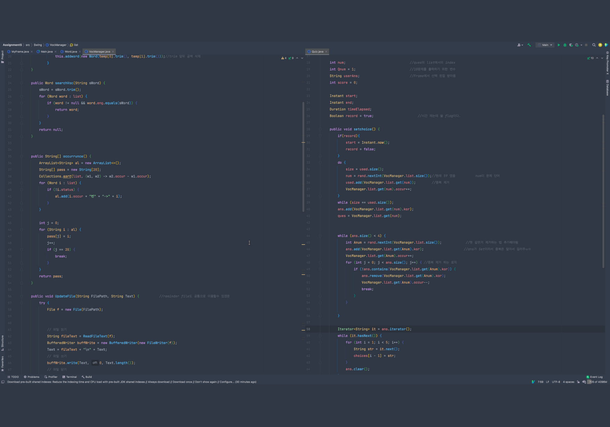

단어장 프로그램
Java Swing을 이용해서 단어장 프로그램을 만들어 보았습니다. 영단어와 한글뜻이 있는 txt파일을 읽게 해 그 파일을 바탕으로 단어 검색기능, 퀴즈 기능, 모든 단어 출력, 오답노트 기능들을 구현해 보았다. 또한 프로그램을 껐다 켜도 오답노트가 초기화 되지 않도록 만들었습니다.
이 프로젝트를 만들면서 최대한 객체 지향적으로 설계 하려 노력하였습니다. Single responsible principle을 만족하기 위해서 MyFrmae, Quiz, VocManager, Word class를 만들어서 화면에 출력, 퀴즈, 단어의 관리(검색기능, 오답노트기능), 단어와 그 뜻을 관리 하게 설계하였다.
비록 캡슐화, 상속, 추상화, 다형성등을 활용하여 정확히 객체 지향적으로 설계 하지 않은 것 같지만 OOP의 공부 방향을 정할수 있게 해주었다. 또한 실제 유저가 사용할 것을 고려하여 예외처리를 더욱 신경써서 하면서 유저 입장에서 생각하는 법을 배울수 있었다.